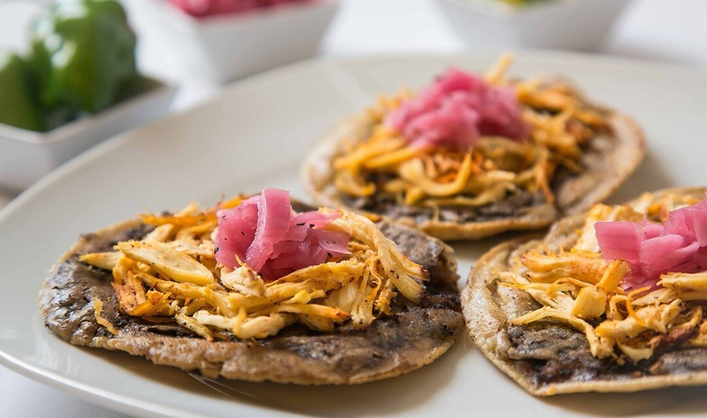

Receta de panucho
Pagina de inicio

El panucho es un platillo típico del sur de México, muy popular entre Campeche y Mérida.
El panucho tradicional consiste en una tortilla de maíz a la que se le hace un pequeño corte en la orilla y se rellena de frijol colado.
Hecho esto, se fríe en aceite o manteca. Posteriormente se coloca encima carne de pollo deshebrada, cebolla morada en naranja
y salsa tamulada de chile habanero.
Ingredientes
- 1 paquete de masa de maíz blanco nixtamalizado de Maíz Maya
- Cochinita pibil casera Maíz Maya
- 1 lata de frijoles, pueden ser negros o bayos refritos
- Manteca de cerdo o aceite de oliva
- Agua tibia
- Máquina o prensa para hacer tortillas (opcional)
- agua
- sal
- Salsa habanera (opcional)
Pasos para su preparacion
- Mezclar la masa, con una pizca de sal, un poco de agua tibia y amasar hasta que quede agarre consistencia a plastilina.
- Añade a tu masa un poco de manteca de cerdo, o si no encuentras un poco de aceite oliva.
Con manteca quedan mejor, el sabor es más auténtico, pero no pasa nada, también quedan ricos. Amasa bien, la masa no tiene que abrirse al apretarla.
- Forma bolitas con la masa y aplana con una máquina para tortillas. Si no tienes, no pasa nada, utiliza un rodillo o un vaso.
- Cocina por los dos lados en un comal o sartén bien caliente. Para saber que está lista, la tortilla se tiene que inflar
- Deja enfriar un poco las tortillas y con ayuda de un cuchillo o de unas tijeras corta la oril
- Rellena con frijoles la tortilla por el hueco que cortaste previamen
- Puedes colocar directamente la cochinita pibil sobre el panucho, pero si quieres que sepa aún mejor, fríelo primero ligeramente en manteca de cerdo o acei
- Y ahora sí, añade la cochinita por encima del panucho, ¡y disfruta!